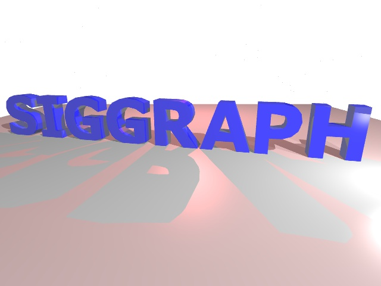

Nan Li
My name is Nan Li. Currently, I am a full time computer science
major grad student in University
of Southern California.
I earned my Bachelor's degree in computer science from
Arizona State University in
2023 fall.
Projects
Ray Tracer
Oct. 2024
A simple Ray Tracer check the intersection with triangle and sphere, using Phong shading model with antialiasing.
Inverse Kinematic and Skinning
Apr. 2024
This project covers Forward kinematic, Inverse Kinematic and Skinning. Users can
move the position of the end effectors to animate the mesh. The program also
provides different algorithms in skinning and inverse kinematic.
Skinning and dual quaternion
2D Object Deformation
This project focuses on FEM(finite element method) 2D deformable object simulation.
There are three different algorithms: mass spring system. linear FEM, and
Co rotational System. The following videos demonstrate their difference.
Jell-O
Feb. 2024
Jell-O is a physics based simulation of a deformable object which
consists of 512 vertices and connected with structure, shear, and
bend springs. The cube is placed inside a box where the collisions
are handled by penalty method.
Prime Engine Game Demo
Apr. 2024
Prime Engine is a low-level game engine made by Artjoms Kovalovs,
in which I explored a lot of concepts about game production,
including physics, skeleton animation and basic visual effect. This
simple game demo includes basic particle system rendering,
physics collision detection and animation system.
Feel free to email me if you want to chat.